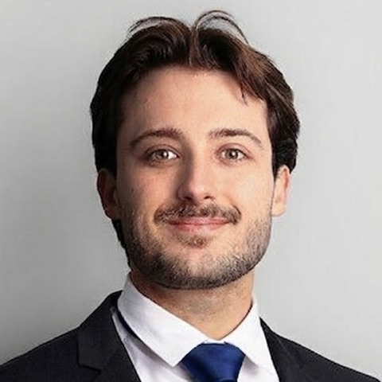

Cartilage bioprinting
Developed a heatable passive mixing nozzle for in-situ bioprinting of cartilage at the Ingenuity Lab, formulated several bioinks and validated them against native tissue. Grade 5.75/6.
BioprintingTissue engineeringSEMCAD

Robotics & Biomedical Engineer
Intern at Voliro · MSc Mechanical Engineering, ETH Zürich
Zürich, Switzerland
Mechanical engineer from ETH Zürich, focused on robotics and biomedical engineering. I like the part where theory meets the workshop: from carbon-fibre wing spars and precision mechanisms to bioprinting nozzles, and from cost-function-based trajectory optimisation to training walking robots with reinforcement learning in MuJoCo and Isaac Gym.
Today I work at Voliro, an ETH spin-off building aerial robots that inspect industrial infrastructure by touching it. Outside work I'm usually on a road bike or training for the next long run.
Developed a heatable passive mixing nozzle for in-situ bioprinting of cartilage at the Ingenuity Lab, formulated several bioinks and validated them against native tissue. Grade 5.75/6.
BioprintingTissue engineeringSEMCAD
Investigated and validated computer-vision tracking systems that analyse human movement without physical markers, at the Sensory-Motor Systems Lab. Grade 5.5/6.
Computer visionBiomechanicsPython
Trained a 12-DoF biped robot with PPO in Isaac Gym to imitate a walking motion: reward design, phase variable, deployment-ready observations and domain randomisation (friction, mass, pushes), then transferred the policy Sim2Sim to MuJoCo.
RL · PPOIsaac GymMuJoCoSim2Sim
Kinematic walking controllers for quadruped and hexapod robots (trajectory planning and inverse kinematics), and trajectory optimisation for a biped from inverted-pendulum to single-rigid-body models, walking and jumping.
C++Inverse kinematicsLIP · SRBMuJoCo
Cost-function-based trajectory planning for a spacecraft among planets using successive convexification (SCvx), with collision-avoidance constraints. Plus multi-robot planning with A* and decision making with MDPs.
SCvxCVXPYA*MDPs
Estimated heart rate from PPG signals and breathing rate from wearable sensor data, combining biosignal processing with a trained neural network.
BiosignalsPythonNeural networks
Team project redesigning today's gynaecological speculum with soft robotics: a design that expands gently using pneumatic pressure, aimed at patient groups that are underrepresented in medical device design.
Soft roboticsPneumatic actuationMedical device designTeamwork
Designed and built a robust, low-cost precision seeder for low-infrastructure regions, using off-the-shelf parts for easy maintenance.
User-centred designPrototyping3D printing
Optimised a thermoplastic carbon-fibre aircraft wing spar for weight and bending load to failure, then manufactured it and tested it to destruction.
FEMCompositesTesting
Designed and validated a ratcheting wrench with a smaller swing angle than market standards.
Siemens NXFEAMechanism design
Programmed and trained a U-Net neural network to recognise specific objects in image datasets.
Deep learningComputer visionPython
Built a React web app as an interactive study guide for the Computational Models of Motion course, covering lectures from kinematics to reinforcement learning.
ReactViteJavaScript
Built and programmed an autonomous line-following “garbage truck” that identifies and sorts waste.
MechatronicsArduino / C++3D printing
Reinforcement learning (PPO)Reward designMotion imitationDomain randomisationSim2Sim transferMuJoCoIsaac GymCloud GPU training (AWS)
Cost-function-based path planningTrajectory optimisationSuccessive convexification (SCvx)Convex optimisation (CVXPY)Graph search (A*)MDPs · value & policy iterationCollision checkingMulti-robot planning
Legged locomotionKinematics & inverse kinematicsJacobiansInverted-pendulum models (LIP, VHIP)Single-rigid-body dynamicsPD controlControl systemsComputer visionMotion trackingMechatronicsArduino
BioprintingTissue engineeringBioink formulationHydrogels & polymer networksSEMMechanical benchmarkingPhysiological modelling (circulation, lungs)Biomedical sensorsMedical imaging: X-ray, CT, ultrasound, nuclearX-ray techniquesWearable biosignals (PPG, breathing rate)Biosignal processing & MLMedical device designSoft roboticsPneumatic actuationMicrorobotics & magnetic actuationLow-Reynolds-number flowsHuman motion analysis
FEA / FEMStructural mechanicsThermodynamicsGD&TMechanism designMaterial selectionLab testing
Carbon-fibre manufacturingComposite manufacturingSolderingPrototyping3D printingMechanical assemblyDestructive testing
Statics, strength of materials & dynamicsFluid dynamicsThermodynamicsElectrical engineeringControl systemsStochastics & machine learningLinear algebra & analysisMaterials scienceManufacturing technologyProcess engineeringDesign optimisationAerodynamicsEngine systems
Product developmentUser-centred designTechnology entrepreneurshipManagerial economicsSustainable materialsEnvironmental managementProject documentation
SolidWorksSiemens NXCATIAFusion 360
PythonNumPy / SciPy / pandasPyTorchCC++MATLABDeep learningGit & GitHubLinux & SSHLaTeXHTML / CSSReact (basics)
SlackNotionWrikeGit & GitHub
German · nativeEnglish · C1French · B2
Finished the Gold route of the Alpenbrevet, one of the classic Swiss alpine road-cycling challenges over several passes in a single day.
Road cycling, marathon and ultra running, climbing, and skiing, where I grew up competing on the slopes before switching to endurance sports. Training data from Strava.
At eight I built a 1/8-scale Team Associated RC car, my first contact with drivetrains, suspension and electronics, and the start of a lasting soft spot for automotive engineering.